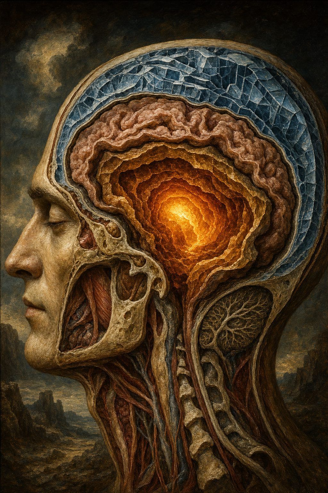
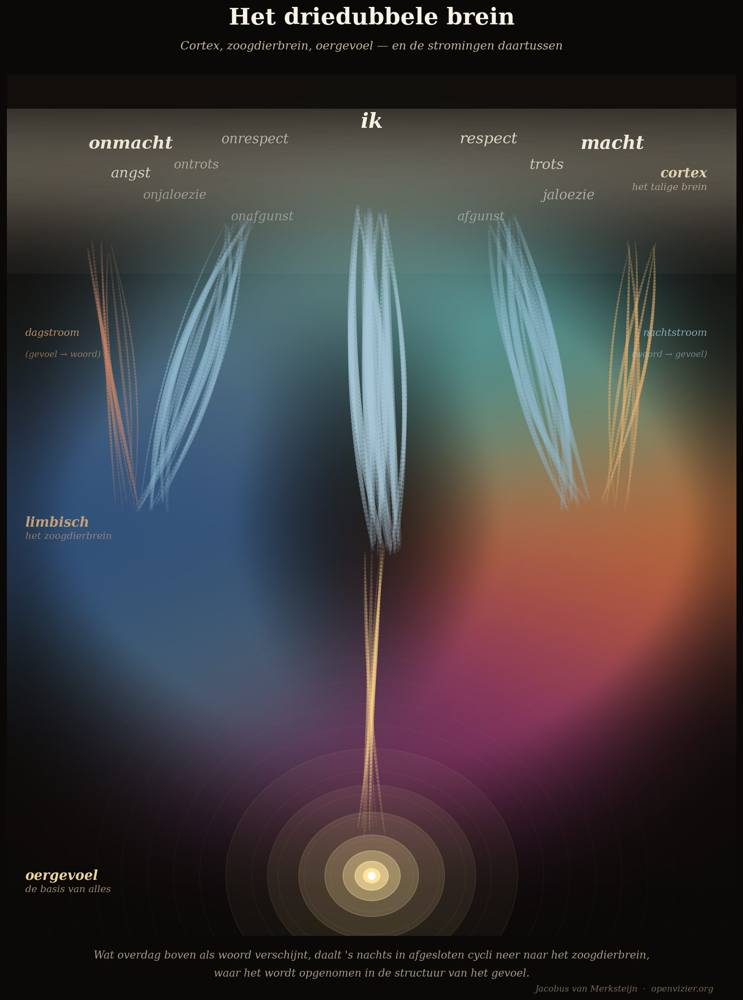

Die drei Gehirnschichten
Urgefühl, Säugetiergehirn, Menschengehirn
Theorie · 13 Min. Lesezeit

Von Jacobus van Merksteijn
Es gibt eine Erfahrung, die fast jeder kennt, die aber die meisten Menschen nicht erklären können. Man beschäftigt sich intensiv mit etwas — einem mathematischen Problem, einer schwierigen Situation, einer Frage, die man nicht loslassen kann. Tagsüber kommt man nicht weiter. Man schläft. Am nächsten Morgen ist die Lösung da. Nicht als bewusster Denkprozess, sondern als ein Wissen, das vorher nicht vorhanden war.
Dichter haben darüber geschrieben. Wissenschaftler haben ihre Durchbrüche darauf zurückgeführt. Kekulé sah die Ringstruktur des Benzols im Traum. Mendelejew sah sein Periodensystem in einem Schlaftraum. Poincaré beschrieb, wie ihn eine Erkenntnis überfiel, in dem Moment, als er in eine Kutsche stieg — nach Wochen vergeblicher bewusster Arbeit.
Die gängige Erklärung ist, dass die Gehirne "im Hintergrund weiterarbeiten". Das ist keine Erklärung. Es ist eine Wiederholung der Beobachtung in anderen Worten. Die eigentliche Frage lautet: Was macht das Gehirn genau, und warum funktioniert es so?
Die Antwort beginnt mit der Architektur.
Drei Schichten, drei Funktionen
Das menschliche Gehirn ist keine Einheit. Es ist eine geschichtete Struktur, die in der Evolution Schicht für Schicht aufgebaut wurde, eine über der anderen, und die im täglichen Funktionieren als Ganzes operiert — aber das nicht immer ist.
Die unterste Schicht ist der älteste Teil: der Hirnstamm und die Strukturen, die mit dem zusammenfallen, was der Neurowissenschaftler Paul MacLean das "Reptiliengehirn" nannte. Die Basalganglien, die Amygdala, die Strukturen, die wir mit Reptilien und frühen Säugetieren teilen. Das ist der Sitz des Urgefühls: die direkte, prälinguale Wahrnehmung der Wirklichkeit. Keine Worte, keine Kategorien, kein Argument. Mustererkennung. Direkte Reaktion auf die Situation. Schneller, als der bewusste Gedanke je argumentieren kann.
Die mittlere Schicht ist das limbische System — das Säugetiergehirn. Hier leben Gefühle als Farbe und Intensität: das Terrakotta der Macht, das tiefe Blau der Ohnmacht, das Purpur des Neids. Keine Etiketten — denn in der limbischen Schicht sind Gefühle einfach da. Sie haben Gewicht und Richtung. Aber sie sind noch nicht in einem Satz eingefangen. Das ist die Schicht, die wir mit allen Säugetieren teilen, die vor uns auf dieser Erde gelebt haben, von Wölfen über Elefanten bis zu Delfinen.
Die oberste Schicht ist der Neokortex — das Sprachgehirn. Die große sprachverarbeitende Maschine. Der Kortex benennt. Er kategorisiert. Er spricht. "Das ist Eifersucht." "Das ist Angst." "Das ist Liebe." Dieses Benennen ist nützlich, aber es ist auch eine Reduktion: Das Gefühl wird in eine Kategorie eingeklemmt, und die Kategorie ist immer zu eng für die tatsächliche Erfahrung. Der Kortex produziert viel. Er versteht nicht immer, was er produziert.
Die oberste Schicht ist der Neokortex — das Sprachgehirn.
Drei Schichten, drei Funktionen: Die Urschicht liest direkt, die limbische Schicht färbt und verarbeitet, der Kortex benennt und spricht. Wenn alle drei zusammenarbeiten — wenn die Urschicht ihre direkte Lektüre weitergibt, die limbische Schicht sie zu einem gefühlten Muster vertieft, und der Kortex schließlich Worte dafür findet — dann funktioniert ein Mensch am vollständigsten. Er weiß, was er fühlt, er fühlt, was er weiß, und er kann darüber sprechen.
Aber es gibt eine Bewegung, die fast niemand erklärt, und die alles verändert.
Der Tagesstrom
Der Tagesstrom verläuft aufwärts: vom limbischen System zum Kortex. Ein Gefühl — eine Spannung, eine Farbe, eine Intensität — quillt aus der limbischen Schicht auf und sucht Worte im Kortex. "Das ist Eifersucht." "Das ist das Gefühl, nicht dazuzugehören." "Das ist das Unbehagen der Situation, die nicht stimmt."
Dieses Benennen ist nützlich. Es erhellt den Kortex. Es macht besprechbar, was vorher nur spürbar war. Aber der Tagesstrom ist nicht das Ende der Geschichte. Denn was der Kortex von unten empfängt und in Worte kleidet, ist damit noch nicht verarbeitet. Es ist benannt. Das ist etwas anderes.
Wenn der Tagesstrom blockiert wird — wenn Gefühle den Kortex nicht mehr erreichen, oder wenn der Kortex sich weigert, anzunehmen, was von unten kommt — entsteht das, was ich das angelernte Loos nenne: Das Gefühl ist da, in der limbischen Schicht, aber der Kortex hat gelernt, es wegzuschieben. "Sei nicht so empfindlich." "Das bildest du dir ein." "Kannst du das begründen?" Jahrzehnte dieser Sätze produzieren jemanden, der sein eigenes Gefühlsleben nicht mehr hört. Der Kortex hat gewonnen. Er hat nicht nur das Gefühl überschrieben — er glaubt seiner eigenen Überschreibung.
Das ist die am weitesten verbreitete psychologische Störung unserer Zeit, und sie hat keinen Namen im DSM.
Der Nachtstrom
Der Nachtstrom verläuft abwärts: vom Kortex zum limbischen System. Das ist es, was in der Nacht passiert. Das ist der Schlüssel.
Während des REM-Schlafs — der Phase mit den schnellen Augenbewegungen, den lebhaften Träumen, der intensivsten neuronalen Verarbeitung — sind alle externen Eingangsströme faktisch abgeschnitten. Der Körper ist durch Muskellähmung immobilisiert, damit die Bewegungssignale aus dem Traum nicht ausgeführt werden. Der Kortex kann keine neuen Informationen von außen empfangen. Er ist auf sich selbst angewiesen.
In diesem abgeschlossenen Zustand beginnt die eigentliche Verarbeitung. Die Erfahrungen des Tages werden erneut abgespielt, sortiert, gewogen. Der Kortex vergleicht das neue Material mit bestehenden Mustern in den tieferliegenden Strukturen. Wo es Spannung zwischen dem Neuen und dem Bestehenden gibt, löst sich die Spannung auf. Das Ergebnis ist, dass das, was tagsüber als Wort vorhanden war, nachts in ein bestehendes Muster des Anspürens integriert wird. Wissen steigt herab.
Das ist die Bewegung, die Kekulé kannte. Nicht der Benzolring als bewusste Argumentation — der Ring als Muster, das nachts, im abwärts gerichteten Strom, seinen Platz in der tiefen Struktur des Gespürs fand. Und das morgens, wenn der Kortex wieder anspringt, als ein Wissen präsent war, das vorher nicht da war.
Nicht der Benzolring als bewusste Argumentation — der Ring als Muster, das nachts, im abwärts gerichteten Strom, seinen Platz in der tiefen Struktur des Gespürs fand.
Ich beschreibe das als "Abgießen nach unten in abgeschlossenen Phasen": Der Kortex gießt nachts sein Material in das limbische System ab, in einem Zyklus, der vor neuen externen Eingaben geschützt ist. Was tagsüber oben als Wort erschien, steigt nachts als Gefühl nieder. Wissen wird Weisheit. Information wird Gespür.
Es gibt auch einen dritten Strom: den Urstrom, der vom Urgefühl zur limbischen Schicht verläuft. Das ist der kontinuierliche Hintergrundstrom. Das Urgefühl liest unaufhörlich — es ist immer aktiv, immer registrierend. Die Information steigt auf wie ein konstanter unterirdischer Fluss. Wenn man einen Raum betritt und das Gefühl hat, dass etwas nicht stimmt — ohne es benennen zu können, ohne dass man etwas Spezifisches wahrgenommen hätte — dann ist das der Urstrom, der die limbische Schicht erreicht hat, aber den Kortex noch nicht.
Warum Einsicht allein nicht genügt
Hier ist die praktische Konsequenz, die fast alle psychotherapeutischen Schulen übersehen oder unterschätzen.
Es gibt zwei Arten von Wissen, die sich qualitativ voneinander unterscheiden. Das Kortex-Wissen: Das Wissen, das man aussprechen, argumentieren, verteidigen kann. Das Wissen, das Prüfungen besteht, Aufsätze schreibt, sich in einem Gespräch behauptet. Und das limbische Wissen: Das Wissen, das man nicht erklären kann, aber das den Kompass steuert, das man in Situationen direkt spürt, das einen vor Gefahren schützt und zu Chancen führt.
Der REM-Schlaf ist die Brücke, die das Erste in das Zweite umwandelt.
Wenn jemand etwas wirklich gelernt hat — nicht als Kortex-Faktum, sondern als Gefühlsmuster — dann immer nach einer Periode der Verarbeitung, des Schlafs, der nächtlichen Sedimentation. Es ist der Unterschied zwischen jemandem, der ein Buch über Schwimmen gelesen hat, und jemandem, der schwimmen gelernt hat. Beide haben Wissen. Aber der Zweite hat das Wissen in die Struktur seines Körpers, seines limbischen Systems, seines Urgefühls absinken lassen. Er kann schwimmen.
Das erklärt ein Phänomen, das Therapeuten kennen, aber selten ehrlich benennen: Menschen, die jahrelang in Therapie gehen, viel über sich selbst verstehen, aber wenig sich wirklich verändern. Sie haben Kortex-Wissen erworben. Sie wissen, dass ihre Angst auf das zurückgeht, was in ihrer frühen Kindheit passiert ist. Sie wissen, wie ihre Muster aussehen. Sie können es erklären. Aber die Muster sind noch da. Das Verhalten ändert sich nicht.
Das ist kein Versagen des Therapeuten oder des Patienten. Es ist die Konsequenz eines Systems, das primär über den Kortex arbeitet — über Worte, Einsichten, das Gespräch — und damit die Schicht bedient, die die geringste Veränderungskraft hat. Der Kortex benennt. Die Veränderung sitzt tiefer, in der limbischen Schicht, und die wird nicht über Worte erreicht. Sie wird über den Nachtstrom erreicht — über die nächtliche Sedimentation von Erfahrungen, die tagsüber gemacht wurden und die die Chance bekommen, abzusinken.
Gute Therapie erleichtert dieses Abgießen. Körperorientierte Ansätze, rituelle Wiederholung, künstlerische Interventionen, die die limbische Schicht direkt über Farbe, Rhythmus, Melodie, Bewegung berühren — all diese Arten von Arbeit wirken auf der Schicht, wo Veränderung wirklich sitzt. Und Schlaf — Schlaf von ausreichender Qualität und Dauer — ist das am meisten unterschätzte Instrument für Therapie und Selbstentwicklung, das es gibt. Nicht schlafen ist nicht nur ungesund. Es verhindert das Abgießen. Das Wissen bleibt oben hängen, flüchtig und nicht gesichert. Der Mensch wird nicht weise durch seine Erfahrungen.
Das Gemälde als Illustration

Es gibt ein Gemälde, das die drei Gehirnschichten auf eine Weise darstellt, die die Worte übersteigt. Ich habe dieses Gemälde als Illustration für das theoretische Werk anfertigen lassen, und ich verweise hier darauf als visuellen Anker für jene, die das Modell nicht nur in Worten verstehen wollen.
Im Gemälde erscheint das Urgefühl als intensiver Lichtpunkt tief unten, umgeben von Ringen sanften Leuchtens, die sich nach allen Seiten ausbreiten. Die limbische Schicht ist als große, ineinander übergehende Farbfelder dargestellt: Terrakotta für Macht, Teal für Respekt, Tiefblau für Ohnmacht, Purpur für Neid. Keine Etiketten — denn in der limbischen Schicht sind Gefühle ohne Worte präsent. Der Kortex ist das dünne Band ganz oben, in dem Worte pulsieren: Respekt, Eifersucht, Stolz, Macht, Angst. Der Kortex benennt. Er ist die hellste Schicht, die flüchtigste.
Zwischen den Schichten verlaufen die Ströme. Aufwärts der Tagesstrom — das Aufquellen von Gefühl zu Wort. Abwärts der Nachtstrom — die abwärts gerichtete Verarbeitung in abgeschlossenen Phasen. Und als kontinuierlich tragender Strom der Urstrom, der aus dem tiefsten Lichtpunkt aufquillt wie ein unterirdischer Fluss, der niemals aufhört.
Aufwärts der Tagesstrom — das Aufquellen von Gefühl zu Wort.
Das Modell ist nicht mystisch. Es ist Architektur. Wer die Architektur versteht, versteht auch, wofür er steht, wenn er morgens aufwacht und etwas weiß, was er am Abend zuvor noch nicht wusste.
Die Lektion für das Bildungswesen
Ein Bildungssystem, das Kinder mit Aktivität überhäuft und ihnen die Stille und den Schlaf entzieht, die für echtes Lernen notwendig sind, konfiguriert sie als Maschinen, die leisten, aber nicht weise werden. Das Kortex-Material stapelt sich auf. Der Nachtstrom kann es nicht verarbeiten — es gibt zu wenig Schlaf, der Schlaf ist durch Bildschirme gestört, die Stille, die das Abgießen schützt, ist systematisch abwesend.
Die Folge sind Kinder, die viel wissen und wenig spüren. Die bei Tests hohe Punkte erzielen und ihren Kompass verloren haben. Die Faktenwissen abrufen, aber nicht wissen, was sie damit wollen. Die mit achtzehn Jahren die Universität betreten — mit einem eindrucksvollen kognitiven Apparat und einem völlig ungeerdeten inneren Leben.
Das Bildungswesen, das die drei Gehirnschichten ernst nimmt, macht das Gegenteil: Es schützt die Urschicht, nährt die limbische Schicht über Geschichten, Bewegung, Natur und Stille, und bietet dem Kortex seine Worte erst an, wenn es etwas gibt, worauf diese Worte ruhen können. Wissen, das einer leeren limbischen Schicht angeboten wird, trocknet schnell aus. Wissen, das auf einen reichen Gefühlsgrund niederschlägt, wird Weisheit.
Das ist der Unterschied zwischen einem Schulsystem, das den kürzesten Weg zum Abschluss sucht, und einem Lernsystem, das den längsten Weg zu einem Menschenleben geht.
Wer weiterlesen möchte: Die vollständige Ausarbeitung der drei Gehirnschichten, des Tages- und Nachtstroms, des REM-Schlafs als neuronale Lerntechnik und der drei Arten von Loos-Formen steht im Werk Denkbasis für ein 7-dimensionales Gefühlsmodell. Die pädagogischen Konsequenzen — wie ein Schultag aussieht, wenn der Nachtstrom ernst genommen wird — stehen im Manifest für Bildung und Erziehung. Beide Werke sind als Download auf openvizier.org verfügbar.
Die pädagogischen Konsequenzen — wie ein Schultag aussieht, wenn der Nachtstrom ernst genommen wird — stehen im Manifest für Bildung und Erziehung.
Das dreifache Gehirn und was in der Nacht passiert
Man kämpft tagsüber mit einem Problem. Man schläft. Morgens ist die Lösung da. Das ist keine Zufälligkeit. Das ist Architektur.
"Wissen wird Weisheit. Information wird Gespür. Das passiert nachts."
Drei Schichten, drei Funktionen
Das menschliche Gehirn ist keine Einheit. Es ist eine geschichtete Struktur, evolutionär Schicht für Schicht aufgebaut.
Tagesstrom und Nachtstrom
Der Tagesstrom verläuft aufwärts: vom limbischen System zum Kortex. Ein Gefühl quillt auf und sucht Worte. Nützlich — aber das Benennen ist noch nicht das Verarbeiten.
Der Nachtstrom verläuft abwärts: vom Kortex zum limbischen System. Das ist der Schlüssel. Während des REM-Schlafs sind alle externen Eingangsströme abgeschnitten. Der Kortex spielt die Erfahrungen des Tages erneut ab, sortiert, wägt — und gießt sein Material in die tiefen Strukturen ab. Was tagsüber oben als Wort erschien, steigt nachts als Gefühl nieder. Kekulé sah den Benzolring im Traum. Das ist kein Wunder. Das ist dieser Mechanismus.
Warum Einsicht allein nicht genügt
Menschen gehen jahrelang in Therapie, verstehen viel über sich selbst, verändern sich wenig. Sie haben Kortex-Wissen erworben. Sie können alles erklären. Aber die Muster sind noch da. Das Verhalten ändert sich nicht. Das ist kein Versagen des Therapeuten. Es ist die Konsequenz eines Systems, das primär über den Kortex arbeitet — über Worte und Einsichten. Der Kortex benennt. Die Veränderung sitzt tiefer, in der limbischen Schicht. Sie wird über den Nachtstrom erreicht.
Schlaf — ausreichend, ungestört — ist das am meisten unterschätzte Instrument für Therapie und Selbstentwicklung, das es gibt. Nicht schlafen verhindert das Abgießen. Das Wissen bleibt oben hängen, flüchtig und nicht gesichert.
Schluss
Ein Bildungssystem, das Kinder mit Aktivität überhäuft und ihnen Stille und Schlaf entzieht, konfiguriert sie als Maschinen, die leisten, aber nicht weise werden. Das Kortex-Material stapelt sich auf. Der Nachtstrom kann es nicht verarbeiten. Was bleibt: Kinder, die viel wissen und wenig spüren.
"Wissen, das einer leeren limbischen Schicht angeboten wird, trocknet schnell aus. Wissen, das auf einen reichen Gefühlsgrund niederschlägt, wird Weisheit." — Jacobus van Merksteijn